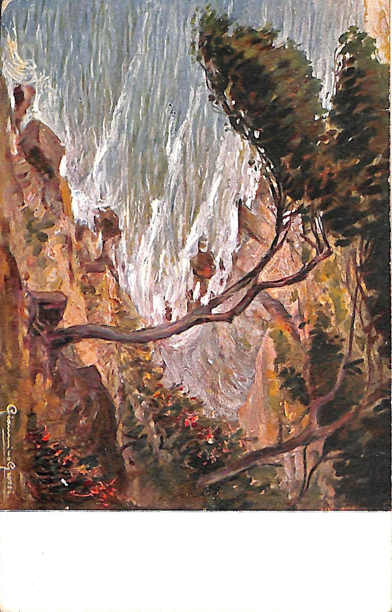

cartolina 1

Questa è la cartolina N019.
Il fronte della cartolina presenta un albero vista mare firmato Giannino Grossi.
Sul retro possiamo trovare il mittente Mario che con un augurio saluta il destinatario
Olivia Turtura e la famiglia.
cartoliona 2

Questa è la cartolina n071.
Nella cartolina sono rappresentati due soldati che brindano sotto un orologio circorndato
da fiori
sotto troviamo la scritta:"In Freud' und Leid bewährt sich deutsche Einigkeit".
Non abbiamo notizie sul mittente e il destinatario, ma probabilmente, in riferimento
al testo e alla data 14 agosto 1916 sul retro della stessa cartolina, possiamo evincere
che il mittente stesse parlando della battaglia dell'Isonzo (Battaglia di Gorizia),
combattuta tra il 4 e il 17 agosto.
Cartolina 3

Questa è la cartolina n083.
La cartolina n083 presenta l'illustrazione della Madonnina di Stefano Bersani, pittore
italiano. La cartolina infatti,
è un augurio di buon onomastico mandato da Giovannino ad Antonella Turtura, parente
di Olivia Turtura.